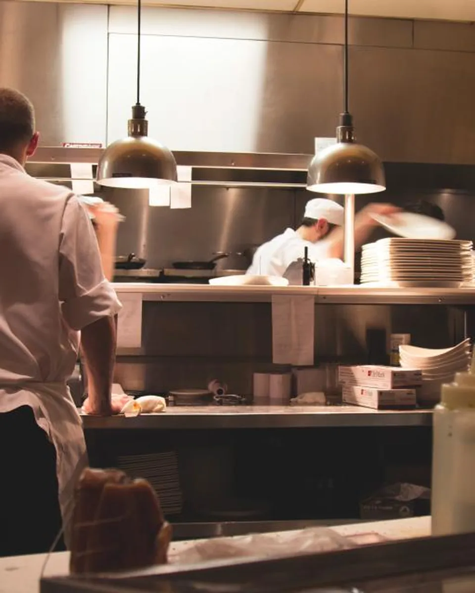
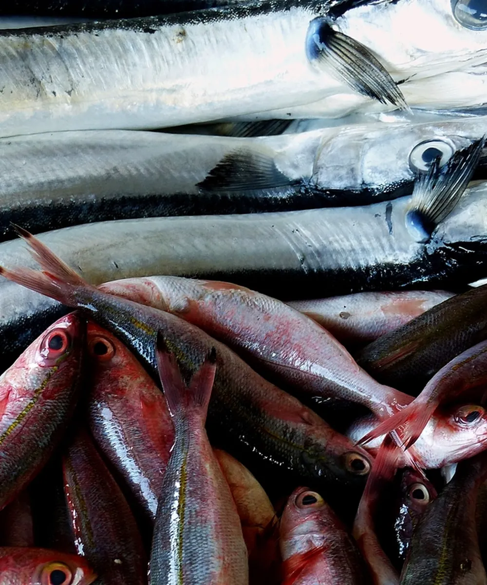
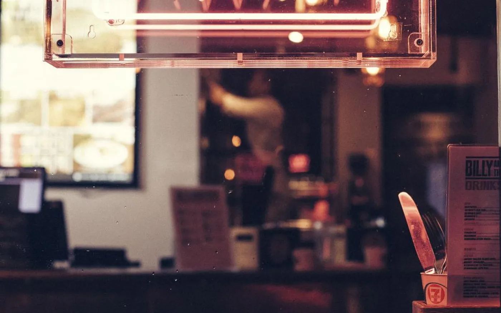
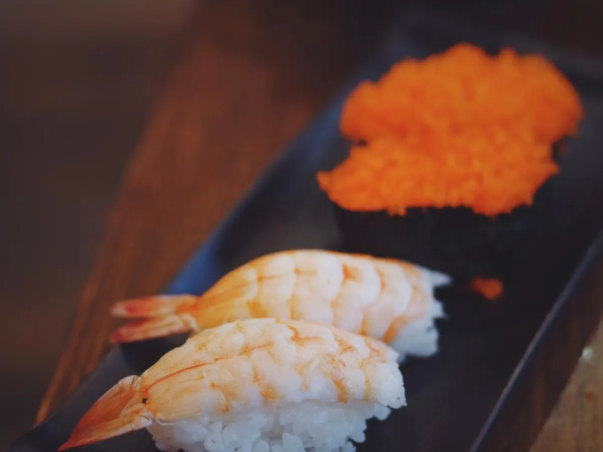
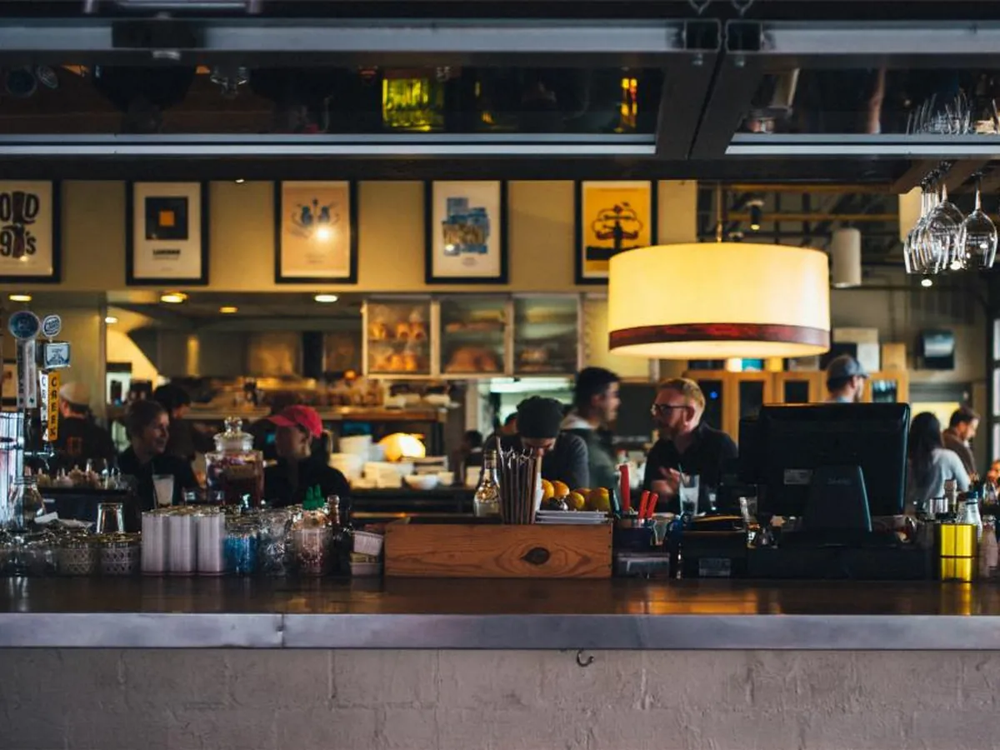

성북동 셰프 오마카세 · 카운터 8석
불 앞에서는
서두르지 않습니다.
재료가 준비되는 시간과 불이 익히는 시간을 기다립니다. 여덟 자리, 저녁 두 차례. 셰프 한 사람이 장보기부터 마지막 접시까지 맡습니다.

01 셰프
정우현셰프 · 화로 대표
화로에서 정우현은 재료를 고르고 불을 다루는 사람입니다. 홀과 주방을 나누지 않습니다. 여덟 손님 앞에서 열두 접시를 직접 내고, 접시를 거두는 것도 그의 몫입니다.
그의 판단은 대부분 아침 시장에서 끝납니다. 그날 눈에 들어온 생선과 채소가 코스의 순서를 정하고, 불의 세기와 시간은 그 재료에 맞춰 조정됩니다. 정해진 레시피보다 재료가 지금 어떤 상태인지가 먼저입니다. 그래서 화로의 코스는 매달 바뀌고, 같은 달 안에서도 접시 하나쯤은 달라집니다.
일식과 화로구이 주방에서 14년을 보냈고, 마지막 4년은 도쿄의 숯불 요리 전문점에서 불 앞자리를 맡았습니다. 2022년 4월, 성북동 골목 2층에 여덟 자리를 두고 화로를 열었습니다. 좌석을 늘리자는 제안은 몇 차례 있었지만 여덟 자리를 지키고 있습니다. 이유는 아래 세 번째 원칙에 적었습니다.
그는 요리를 재료가 가진 것을 꺼내는 일이라고 말합니다. 더하는 일이 아니라고. 그래서 화로의 양념은 소금과 간장, 그리고 불이 거의 전부입니다.
“익힐지 말지를 정하는 것은 제가 아니라 재료입니다. 저는 그 결정을 늦지 않게 따를 뿐입니다.”
- 주방 경력
- 일식·화로구이 14년도쿄 숯불 요리 전문점 4년 포함
- 화로 개점
- 2022년 4월서울 성북동, 카운터 8석
- 맡는 일
- 장보기 · 손질 · 불 · 서빙보조 1명이 설거지와 음료를 맡습니다
- 하루
- 런치 1회 · 디너 2회화–토, 최대 24명
02 철학
먼저 재료, 그다음 불.
타이밍은 앞의 두 가지가 맞았을 때만 의미가 있습니다. 화려한 기술보다 순서가 중요합니다. 재료를 알아보고, 그 재료가 견딜 만큼의 불을 쓰고, 알맞은 순간에 손님 앞에 놓는 것. 이 순서가 어긋나지 않으면 접시는 대개 설명 없이 이해됩니다.
-
재료
- 신념
- 좋은 재료는 설명이 필요 없습니다. 다만 그 상태를 알아보는 눈이 필요합니다.
- 과정
- 매일 새벽 노량진과 가락시장을 직접 돕니다. 하루에 쓸 만큼만 사고, 어획 방식과 배가 들어온 시각을 묻습니다. 산지를 정해두지 않고 그날 상태가 좋은 쪽을 고릅니다.
- 증거
- 메뉴에 적힌 재료가 그날 마음에 들지 않으면 그 접시를 다른 것으로 바꾸고, 손님께 이유를 말씀드립니다. 지난 7월에는 병어 대신 갈치를 낸 날이 나흘 있었습니다.
-
불
- 신념
- 불은 도구가 아니라 조건입니다. 재료가 견딜 수 있는 만큼만 씁니다.
- 과정
- 기슈 비장탄을 씁니다. 화로를 강한 불, 중간 불, 잔불 세 구역으로 나누고, 화력을 바꾸는 대신 재료와 숯의 거리를 바꿉니다. 껍질이 있는 재료는 껍질부터, 두꺼운 재료는 잔불에서 오래.
- 증거
- 숯을 피우는 데 40분을 씁니다. 첫 손님이 앉기 전에 불이 안정될 시간을 확보하기 위해서입니다. 손님이 앉은 뒤에 숯을 새로 넣는 일은 없습니다.
-
타이밍
- 신념
- 한 접시가 가장 좋은 순간은 짧습니다. 그 순간에 손님 앞에 있어야 합니다.
- 과정
- 접시 사이 간격은 6분에서 9분. 손님이 젓가락을 내려놓는 속도를 보고 다음 재료를 불에 올립니다. 숙성은 재료별로 일수와 상태를 기록해 두고, 그 기록으로 다음 달을 조정합니다.
- 증거
- 좌석을 여덟 자리에서 늘리지 않는 이유가 여기에 있습니다. 한 사람이 불 앞에서 동시에 알맞은 온도로 낼 수 있는 접시의 수가 그 정도라는 것을, 개점 후 4년 동안 확인했습니다.
재료가 준비되지 않은 날은
그 접시를 내지 않습니다.
03 오늘의 코스
2026년 8월, 늦여름의 코스
8월의 화로는 민어와 하모, 옥수수와 가지로 시작합니다. 아래 구성은 8월 15일 기준이며, 그날 시장 상황에 따라 한두 접시가 바뀔 수 있습니다. 바뀐 접시는 자리에서 말씀드립니다.
- 시간
- 18:00 · 20:30하루 두 차례
- 소요
- 약 2시간12접시
- 가격
- 180,0001인 · 부가세 포함
- 페어링
- 65,000사케·차 5잔 · 선택
숯불을 거치는 접시
- 논알코올 차 페어링(4잔) 30,000원. 페어링은 예약 시 또는 자리에서 선택하실 수 있습니다.
- 알레르기와 드시지 못하는 재료는 예약 시 알려 주세요. 코스 구조상 당일 변경은 어렵습니다.
- 1인 코스 기준이며, 같은 자리에서는 같은 코스로 진행합니다. 추가 접시 주문은 받지 않습니다.
- 시간
- 12:00하루 한 차례
- 소요
- 약 90분8접시
- 가격
- 95,0001인 · 부가세 포함
- 페어링
- 35,000사케·차 3잔 · 선택
숯불을 거치는 접시
- 런치는 화요일부터 토요일까지 12:00 한 차례만 진행합니다. 좌석은 동일하게 8석이고, 알레르기와 드시지 못하는 재료는 예약 시 알려 주세요.
- 런치에는 한우와 전복 접시가 포함되지 않습니다. 두 접시를 원하시면 디너를 권합니다.
예약금 1인 50,000원 · 식사 금액에서 차감됩니다.
04 과정
한 접시가 손님 앞에 놓이기까지, 하루의 순서
새벽 다섯 시 반 시장에서 시작해 밤 열한 시 불을 끄는 것으로 끝나는 하루입니다. 단계마다 셰프가 실제로 눈과 손으로 확인하는 것을 그대로 적었습니다.

노량진 수산시장, 05:4008 · 15
-
0105:30 – 08:00
장보기
노량진 수산시장에서 생선을, 가락시장 채소동에서 채소를 고릅니다. 정해 둔 거래처는 있지만, 그날 다른 가게의 물건이 더 좋으면 그쪽을 삽니다. 하루에 쓸 양만 사고, 남기지 않습니다.
확인하는 것
- 눈의 투명도와 아가미 색, 배를 눌렀을 때의 탄력
- 어획 방식(낚시·그물)과 배가 들어온 시각
- 채소는 절단면의 마름 정도와 손에 얹었을 때의 무게
-
0209:00 – 12:00
손질
생선은 물기 없이 포를 뜨고, 뼈와 껍질은 국물과 껍질 구이용으로 따로 둡니다. 소금을 뿌려 30분 재운 뒤 닦아내는 과정에서 살의 상태를 한 번 더 봅니다. 채소는 굽기 직전까지 자르지 않습니다.
확인하는 것
- 핏기가 남지 않았는지, 살 표면이 마르지 않았는지. 칼은 손질 전 매일 한 번 갑니다
- 오늘 코스에서 그 재료가 몇 번째 접시인지, 두께가 그에 맞는지
-
03재료별 기록
숙성
모든 재료를 숙성하지는 않습니다. 광어는 3일에서 5일, 민어는 2일, 한우 치마살은 거래처에서 21일 건식 숙성한 것을 받습니다. 냉장고 안 온도는 0도에서 2도 사이를 유지하고, 재료마다 날짜와 상태를 노트에 적습니다.
확인하는 것
- 온도(0–2°C)와 습도, 하루 두 번 기록
- 표면의 마름과 냄새 — 조금이라도 의심되면 그날 코스에서 뺍니다
- 지난달 같은 재료의 기록과 비교해 일수를 조정
-
0416:00 – 17:40
불
네 시에 비장탄을 피웁니다. 불꽃이 가라앉고 숯 표면에 흰 재가 얇게 앉을 때까지 40분. 화로를 세 구역으로 나누어 숯을 배치하고, 첫 손님이 앉기 전 온도를 손으로 확인합니다. 손님이 앉은 뒤에는 숯을 새로 넣지 않습니다.
확인하는 것
- 불꽃이 없고, 숯 표면에 흰 재가 고르게 앉았는지
- 강한 불 구역은 손을 대고 3초, 잔불은 8초를 기준으로
- 석쇠는 매일 새것처럼 닦였는지, 집게 끝이 휘지 않았는지
- 환기 팬 소음과 카운터 쪽으로 넘어오는 연기의 양
- 비장탄 남은 양 — 저녁 두 차례를 새로 넣지 않고 버틸 만큼인지
-
0518:00 – 22:30
마무리
접시는 손님 앞에서 자르고, 소금은 마지막에 한 번만 뿌립니다. 접시를 내는 간격은 손님의 속도에 맞춥니다. 마지막 차를 내고 나서야 하루의 불을 끕니다.
확인하는 것
- 접시의 온도 — 구이는 따뜻한 접시, 회와 얼음은 차가운 접시. 잔이 비어 있지 않은지도 함께
- 앞 접시가 비워졌는지, 다음 접시까지 6–9분을 지키는지
05 공간과 좌석
불이 보이는 거리, 여덟 자리

카운터는 편백 한 장으로 짰습니다. 화로는 카운터 정중앙에 있고, 어느 자리에서든 숯이 익어가는 소리와 셰프의 손이 보입니다. 음악은 틀지 않습니다. 대신 숯이 타는 소리와 칼 소리가 있습니다.


좌석 배치도카운터 8석 · 화로 1
- 좌석
- 카운터 8석테이블석 없음 · 한 팀 최대 4명
- 카운터
- 편백 통판 5.4m좌석 간격 70cm · 화로까지 1.3m
- 동반
- 만 12세 이상코스 진행 시간과 불 안전을 위해
- 위치
- 서울 성북구 성북로23길 12, 2층4호선 한성대입구역 6번 출구 도보 9분
- 주차
- 건물 내 주차 불가성북구민회관 공영주차장(도보 4분) 이용
계단으로만 올라올 수 있는 2층입니다. 거동이 불편하신 분은 예약 시 알려 주시면 입구에서 안내해 드립니다.
06 예약 안내
한 끼를 맡겨 주시려면
여덟 자리라 예약은 미리 마감되는 편입니다. 아래 안내를 읽어 보시고, 궁금한 점이 있으시면 폼으로 남겨 주세요. 영업일 기준 24시간 안에 문자로 답장드립니다.
운영 시간
- 화 – 토
- 런치 12:00 (1회)디너 18:00 · 20:30 (2회)
- 일 · 월
- 휴무
- 정기 휴무
- 매월 마지막 화요일명절 연휴 · 8월 셋째 주(하계 휴가)
- 전화 문의
- 02-742-0812화 – 토 14:00 – 17:00 통화 가능
예약 방법
- 01매월 1일 오전 11시, 다음 달 좌석 오픈예약 플랫폼(캐치테이블)에서 시간과 인원을 선택하실 수 있습니다. 전화 예약은 남은 좌석에 한해 받습니다.
- 02예약금 1인 50,000원예약 확정 시 결제되며, 당일 식사 금액에서 차감됩니다.
- 03알레르기·비선호 재료 기재예약 시 남겨 주세요. 코스 구조상 당일 변경은 어렵습니다. 임신 중이시면 알려 주시면 회 대신 구이로 준비합니다.
- 04도착시작 시각 10분 전부터 입장하실 수 있습니다. 15분 이상 늦으시면 진행된 접시는 건너뛸 수 있습니다.
취소 · 노쇼 정책
- 3일 전까지
- 예약금 전액 환불
- 2일 전 – 전날
- 예약금 50% 환불
- 당일 · 노쇼
- 예약금 환불 불가
- 인원 변경
- 전날 17:00까지 전화로 가능
재료를 그날 손님 수에 맞춰 사기 때문에 두는 정책입니다. 사정이 생기시면 가능한 한 일찍 알려 주시면 됩니다. 대기 손님께 자리를 드릴 수 있습니다.
예약 문의 남기기
바로 예약이 확정되는 폼은 아닙니다. 남겨 주시면 잔여 좌석과 안내 사항을 확인해 영업일 기준 24시간 안에 문자로 답장드립니다.
문의가 접수되었습니다.
잔여 좌석을 확인해 영업일 기준 24시간 안에 남겨 주신 번호로 문자드리겠습니다. 급하신 경우 화–토 14:00–17:00에 02-742-0812로 전화 주셔도 됩니다.
FAQ 자주 묻는 것들
네. 여덟 자리 중 두세 자리는 대개 혼자 오시는 분들입니다. 카운터 끝자리(1번·8번)를 선호하시면 예약 시 남겨 주세요.
만 12세 이상만 모십니다. 카운터와 화로가 가깝고 코스가 두 시간 가까이 이어지기 때문입니다. 양해 부탁드립니다.
접시 사진은 괜찮습니다. 플래시와 영상 촬영, 다른 손님이 나오는 사진은 삼가 주세요. 접시가 나오고 나서 1분 안에 드시는 것이 가장 좋습니다.
외부 케이크 반입은 어렵습니다. 대신 예약 시 말씀해 주시면 마지막 접시에 작은 글귀를 곁들여 드립니다. 꽃이나 선물은 카운터 아래에 보관해 두었다가 원하시는 순간에 드리겠습니다.
사케 여덟 종과 국산 증류주 세 종, 맥주 두 종을 잔 단위로 준비합니다. 페어링을 선택하지 않으셔도 잔으로 주문하실 수 있습니다. 와인 반입은 병당 30,000원의 콜키지가 있고, 한 팀 두 병까지입니다.